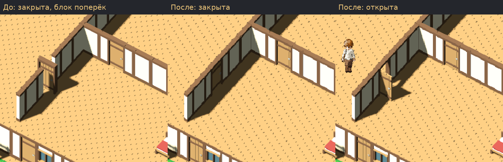
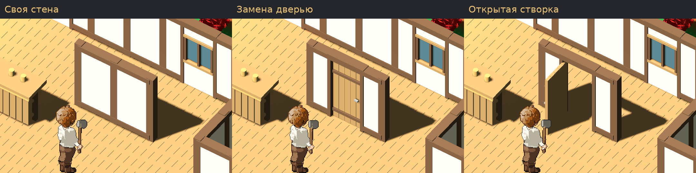
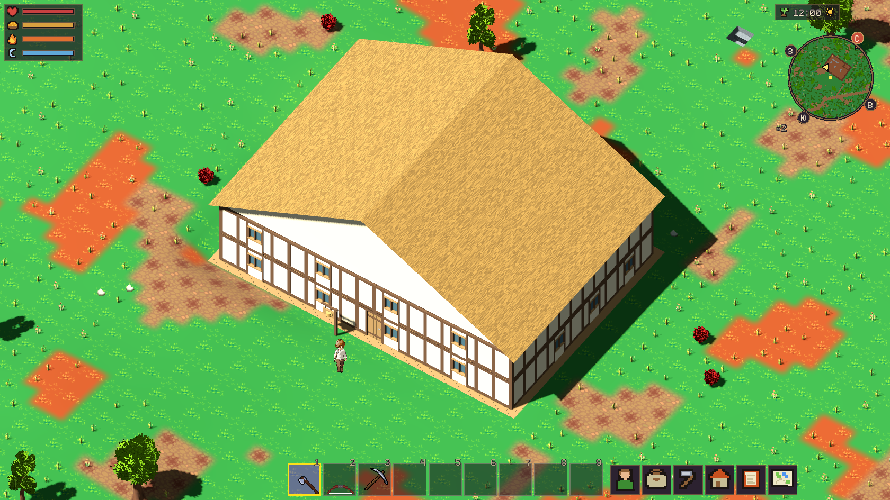

Прежняя закрытая дверь была повёрнута всем блоком поперёк перегородки. Исправлены шаблоны и правила установки. Результат локальный, без коммита и push.

Для сравнения фрагменты приведены к масштабу прежнего кадра. Новые оригиналы 1680×945, прежний — 1800×1013. Игровое содержимое не ретушировалось.

Три своих блока стены. Средний заменяется дверью с зачётом материалов; затем створка открывается. После демонтажа дверь повторно ставится в оставшийся проём.
